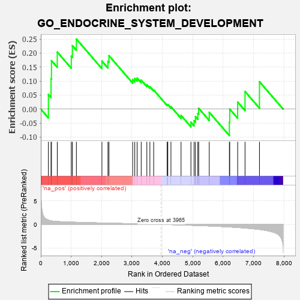

| | | Dataset | 7d |
| Phenotype | NoPhenotypeAvailable |
| Upregulated in class | na_pos |
| GeneSet | GO_ENDOCRINE_SYSTEM_DEVELOPMENT |
| Enrichment Score (ES) | 0.2500845 |
| Normalized Enrichment Score (NES) | 0.8208501 |
| Nominal p-value | 0.71304345 |
| FDR q-value | 0.8994745 |
| FWER p-Value | 1.0 |
Table: GSEA Results Summary

Fig 1: Enrichment plot: GO_ENDOCRINE_SYSTEM_DEVELOPMENT
Profile of the Running ES Score & Positions of GeneSet Members on the Rank Ordered List
| PROBE | GENE SYMBOL | GENE_TITLE | RANK IN GENE LIST | RANK METRIC SCORE | RUNNING ES | CORE ENRICHMENT | | 1 | INSM1 | | | 250 | 0.939 | 0.0519 | Yes |
| 2 | DLL1 | | | 337 | 0.760 | 0.1086 | Yes |
| 3 | GSK3A | | | 351 | 0.745 | 0.1731 | Yes |
| 4 | SRF | | | 542 | 0.615 | 0.2037 | Yes |
| 5 | MEN1 | | | 1003 | 0.483 | 0.1887 | Yes |
| 6 | AKT1 | | | 1040 | 0.476 | 0.2264 | Yes |
| 7 | RFX3 | | | 1171 | 0.451 | 0.2501 | Yes |
| 8 | RAF1 | | | 2011 | 0.303 | 0.1713 | No |
| 9 | OTP | | | 2209 | 0.275 | 0.1710 | No |
| 10 | CREB1 | | | 2243 | 0.269 | 0.1907 | No |
| 11 | WNT4 | | | 3023 | 0.146 | 0.1056 | No |
| 12 | LHX3 | | | 3092 | 0.138 | 0.1093 | No |
| 13 | PAX6 | | | 3170 | 0.127 | 0.1108 | No |
| 14 | SMAD3 | | | 3303 | 0.105 | 0.1035 | No |
| 15 | GLI1 | | | 3489 | 0.079 | 0.0872 | No |
| 16 | MAPK3 | | | 3589 | 0.062 | 0.0802 | No |
| 17 | NF1 | | | 3713 | 0.040 | 0.0683 | No |
| 18 | HNF4A | | | 4157 | -0.034 | 0.0155 | No |
| 19 | PDX1 | | | 4179 | -0.038 | 0.0163 | No |
| 20 | WNT11 | | | 4282 | -0.056 | 0.0085 | No |
| 21 | GATA3 | | | 4614 | -0.120 | -0.0225 | No |
| 22 | MNX1 | | | 4939 | -0.186 | -0.0468 | No |
| 23 | PDPK1 | | | 5043 | -0.207 | -0.0414 | No |
| 24 | DRD2 | | | 5088 | -0.221 | -0.0273 | No |
| 25 | TBX1 | | | 5166 | -0.241 | -0.0156 | No |
| 26 | SMO | | | 5195 | -0.247 | 0.0028 | No |
| 27 | SIDT2 | | | 5542 | -0.331 | -0.0114 | No |
| 28 | INSR | | | 6204 | -0.538 | -0.0468 | No |
| 29 | SMAD2 | | | 6216 | -0.541 | -0.0001 | No |
| 30 | SOX2 | | | 6477 | -0.652 | 0.0250 | No |
| 31 | GSK3B | | | 6719 | -0.768 | 0.0629 | No |
| 32 | TSPO | | | 7194 | -1.065 | 0.0979 | No |
Table: GSEA details [plain text format]
Fig 2: GO_ENDOCRINE_SYSTEM_DEVELOPMENT: Random ES distribution
Gene set null distribution of ES for GO_ENDOCRINE_SYSTEM_DEVELOPMENT